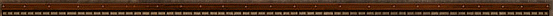

Это реконструированный сайт topw3.narod.ru | Харьков 2005-2007

Официальный пресс-релиз команды ТоР по поводу конфликта с харьковским игроком Apocalypse
Данный релиз призван в первую очередь закрыть ту, весьма неприятную ситуацию, которая имеет место быть в последние несколько дней.
Началось все с того, что некогда довольно известный харьковский игрок Apocalypse в своих заявлениях на некоторых киберспортивных порталах, превысил нормы культуры общения и элементарного хорошего тона и начал откровенно поливать грязью весь клан ТоР, а в особенности его капитана, ТоР)Gannibal-а. Данная ситуация вызвала сильное неодобрение со стороны простых посетителей порталов, так и со стороны самих ТоР-ов, которые незамедлили ответить в достаточно резкой форме. Ниже следует официальное заявление клана ТоР касательно данного вопроса.
“Ныне игрок известный под ником Apocalypse позволяет себе грязные и оскорбительные выражения в адрес нашего клана и в особенности нашего капитана. Мы призываем игроков, которые читали все его бессмысленные пассажи никак на них не реагировать и намерены объяснить почему. Итак, Апокалипс, который начал карьеру игрока около двух лет назад за полтора года участия в чемпионатах по Warcraft III не добился ни одного хоть сколько-нибудь примечательного результата. Люди общавшиеся с Апокалипсом неоднократно замечали, что он считает себя игроком экстра класса, с огромным потенциалом, но не оправдывал своей игрой свои амбиции. Как подтверждение этого факта мы приводим результаты выступления Апокалипса на последних трех турнирах по War3 в которых он принял участие. Таковыми турнирами являлись: WCG2005:Kharkov(2 win, 2 lose), ESC premier Championship(1 win, 2 lose) и Sigma LP1(0win, 2 lose). Таким образом за три турнира Апокалипс смог заработать три победы и 6 поражений.
Некоторое время Апокалипс не принимал участия в турнирах, а затем полностью перешел на популярный мод к war3- Dota:Allstars. Некоторое время его результаты в данной дисциплине так же оставляли желать лучшего, но большое количество тренировок и знакомства с сильнейшими игроками Харькова привели к тому, что Апокалипс был принят в одну из сильнейших команд, за которую и выступал на протяжении более чем полугода. Однако не так давно Апокалипс был исключен из данной команды. На вопрос когда и почему произошел разрыв команды с Апокалипсом известнейший харьковский игрок по доте- never, ответил: «месяц назад. Просто, нашелся более оптимальный состав». За команду Невера по доте на данный момент играет сильнейший игрок в war3- Dimas, а сама команда в последнее время сильно улучшила результаты.
В свою очередь приведем схожую статистику клана ТоР. Итак, после выхода из нее Апокалипса и крайне неудачного завершения 2005-го года, клан был сильно перестроен, состав был собран заново на 70%. Команда стремительно прогрессировала. Помимо улучшения многих, чисто-организационных моментов (среди которых доступность информации о клане, эффективные тренировки и клан-вары) команда сильно улучшила и свои результаты. Так за последние четыре турнира (Polygon RC2, Sigma LP3, WCG:Training cup и WCG2005:Kharkov) команда достигла суммарного результата по играм 34-22, причем от чемпионата к чемпионату улучшала свои результаты. На счету команды также находится участие в нескольких престижных онлайн чемпионатах. Что же касается результатов капитана команды- Gannibal-a, то его результат за аналогичный промежуток времени составляет 9-4 по играм. Клан также берет участие в турнирах по таким «нестандартным» дисциплинам, как “Казаки2”, “Lineage2”, “HoMM3”, HoMM5”, где неоднократно занимали призовые места.
Таким образом, учитывая все выше сказанное, повторяем то с чего начали данный релиз: Апокалипс является несостоявшимся игроком с большим количеством комплексом и манией величия. В данный момент он переживает тяжелые времена, а потому своими пассажами на киберспортивных порталах лишь делает себе рекламы и пытается привлечь к себе внимание. Такой человек достоин лишь жалости и сострадания, а никак не гнева, злости или же неприязни, которые на данный момент испытывают к нему те, с кем еще год назад он находился в одном клане. И мы призываем игнорировать пассажи этого человека и относиться к нему с сочувствием, которого он вне всякого сомнения заслуживает…”
ToP)Grim(накануне старта WCG2006:Kharkov):(накануне старта WCG2006:Kharkov): честно говоря, мне в клане ТоР живется гораздо лучше после ухода из него Апокалипса. Больше нет бесконечной критики, игнорирования тренировок, неоправданной ауры превосходства, которая висела над всеми. После его ухода клан стал сильнее, стабильнее, улучшились результаты, чему я несказанно рад…